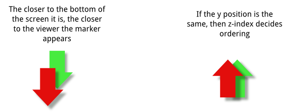

map package provides classes that display an interactive map and allow you to create and add map content.See: Description
| Interface | Description |
|---|---|
| EventListener |
This interface provides a callback mechanism for
MapComponent
interested in user interactions. |
| MapCircle |
This interface defines a
MapObject in the shape of a circle. |
| MapComponent |
This interface is used to extend the functionality
of the basic map.
|
| MapContainer |
This interface is used to group
MapObjects thus allowing operations
on a whole group of objects without the need to iteratively visit each MapObject
individually. |
| MapListener |
This interface defines a series of callback method to use when rendering a map.
|
| MapMarker |
This interface defines a
MapObject whose location on the map is
indicated by an icon. |
| MapObject |
This interface defines is the basis for all visual objects shown in a
map, including the map itself.
|
| MapPolygon |
This interface defines a shape enclosed by a series of points that are traversed in order.
|
| MapPolyline |
This interface defines an object which has multiple points that are traversed in order.
|
| MapRectangle |
This interface defines a
MapObject with a rectangular shape. |
| MapSchemeListener |
This interface offers a set of callback methods used when requesting alternate map
providers from the server.
|
| MapSchemeType |
This interface defines the constants which may be used to set the map provider
and are used by
the
SharingManager and
the MapDisplay classes. |
| MapStandardMarker |
This interface defines a
MapObject which uses a predefined
shape for its display. |
| Class | Description |
|---|---|
| GestureMapCanvas |
This abstract base class extends the default behaviour of the
MapCanvas to include Gesture support, any attached
TouchComponent implementing
an ExtendedEventListener
shall receive gesture events such as pinch() and flick(). |
| MapCanvas |
This class offers an abstract base class for providing a method of showing map content on a
Canvas. |
| MapDisplay |
This class displays a portion of a geographical map, allowing multiple optional
layers (
MapContainers) and MapObjects to be added to it. |
| MapDisplayState |
This class stores the state of a
MapDisplay. |
| MapFactory |
This class is used to instantiate
MapDisplay implementations. |
| MapProvider |
This class offers an abstract base class used to identify a provider for layered map
information.
|
| MapUrlProvider |
This class offers an abstract base class for downloading map tile
Images. |
| Point |
The
Point class is a pixel representation of a point in the view. |
map package provides classes that display an interactive map and allow you to create and add map content.
MapCanvas defines convenience methods to access MapFactory and MapDisplay:
MapFactory creates map objects to be shown on the map
MapDisplay allows you to control the map state
The relationships between these classes (they are members of
com.nokia.maps.map) are summarized in the diagram below:
MapDisplay can contain visual objects. These can be instances of:
MapCircleMapMarkerMapPolygonMapPolylineMapRectangleMapStandardMarker
All the above classes extend the base class MapObject.
MapContainer extends MapObject and is a container for visual map objects
(instances of the classes in the list above). This composite design pattern allows for convenient
grouping of map objects.
StandardMarker can be added to MapDisplay with the following code:
GeoCoordinate coord = new GeoCoordinate( 10, 10, 0 ); MapStandardMarker marker = mapFactory.createStandardMarker(coord, 10, null ); map.addMapObject( marker );
Map components allow applications to extend and change the default functionality of MapDisplay.
MapComponent is added to the display with the method addMapComponent(). If
MapDisplay is used through MapCanvas, components may provide and implementation of
EventListener to handle key and pointer events.
It is possible to use MapDisplay directly without using MapCanvas. MapDisplay
can be rendered using its method renderMap(). The method takes a Graphics object as an
argument and uses it to render map content. With this approach, a MapFactory instance needs to be
created and used to create MapDisplay:
this.mapFactory = MapFactory.createMapFactory(
MapDisplayType.TILE_MAP,
MapResolutionEnum.MAP_RESOLUTION_128_x_128,
getWidth(),
getHeight() );
this.map = mapFactory.createMapDisplay();
This allows full control over rendering, map state and the use of any target that provides a graphics rendering capability.
For example with Canvas, the paint() method needs to be implemented to invoke renderMap().
protected void paint(Graphics g) {
map.renderMap(g);
}
By default, MapDisplay uses only memory to store map content downloaded from the server. On the supported devices,
MapDisplay allows for content caching in RMS - Record Management System, a persistent store defined in the MIDP
specification - or in the file system. The space available in the store depends on the device. File system access requires the
File Connection Optional Package (FCOP) to be supported (and the necessary permissions must be set).
A cache is enabled via the method MapDisplay.setCache(). The method takes a URL argument that can be used to set
the cache location. To use RMS, the argument must have the value "rms". File system cache URLs must start with
file:/// followed by the root as specified in the FCOP.
Color values in this package are defined in terms of ARGB integer values, where the 24 least significant bits define red, green and blue components and eight most significant bits the alpha value (0xAARRGGBB). The high-order byte defining alpha specifies opacity where 0xFFRRGGBB is fully opaque and 0x00RRGGBB is fully transparent. If the target platform does not support transparency the given alpha value is ignored and the given color will be fully opaque.
The z-index of a MapObject specifies its z-buffer stacking order in a MapContainer. In general, an object
with a higher z-index appears closer to the viewer than an object with a lower z-index.
The overall stack order on a MapDisplay instance is defined hierarchically:
MapContainer with the highest z-index is drawn on top of any other instances of MapContainer. MapContainer, the MapObject with highest z-index is drawn on top of any other instances of MapObject.MapMarker follow special ordering rules:
anchor property, the closer to the viewer the marker appears).zIndex inherited from MapObject).The picture below illustrates the marker z-ordering rules:
